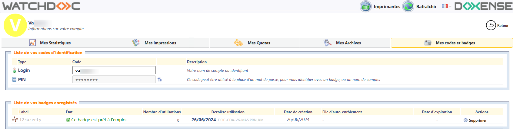
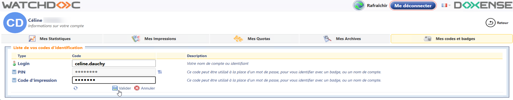
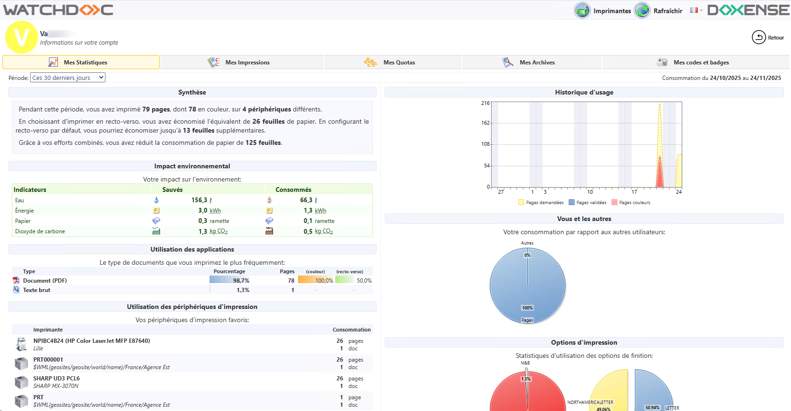
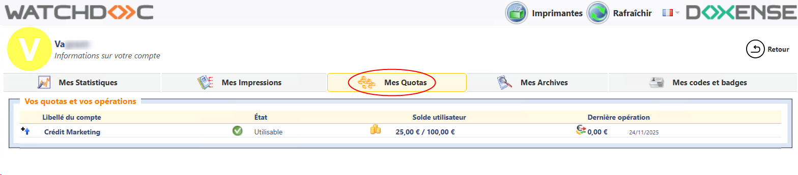
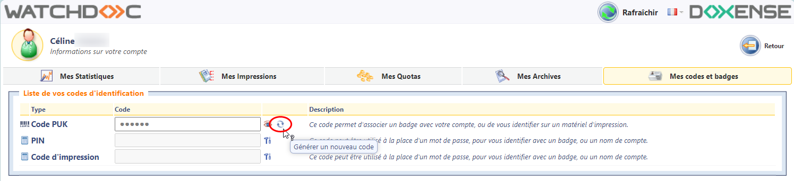

Watchdoc - Utilisateur - Consulter la page "Mon compte"
Présentation
La page "Mon compte" est l'interface web de Watchdoc dédiée à l'utilisateur.
Son url est généralement communiquée par votre référent Watchdoc.
Consulter ses codes et badges
Pour consulter la liste de votre (ou vos) code(s) d'identification et/ou badges enregistrés :
-
depuis l'interface de déblocage de vos documents, cliquez sur Mon compte ;
-
cliquez sur l'onglet Mes codes et badges ;
-
dans la liste Vos codes d'identification figurent plus ou moins de codes (code PIN, code PUK, code d'impression) en fonction de la configuration appliquée. Si le code est masqué, cliquez sur le bouton Voir
 pour afficher le code ;
pour afficher le code ; -
dans la liste Liste de vos badges enregistrés figurent le ou les badges que vous êtes en mesure d'utiliser pour vous identifier sur un WES :

-
{kind=link}
Saisir son code PIN ou son code d'impression
Votre administrateur vous indique la manière dont vous pouvez vous authentifier dans le WES.
S'il s'agit d'un code PIN ou d'un code d'impression, vous pouvez le définir depuis la page "Mes codes et badges" ;
-
le code PIN : code constitué de 4 chiffres minimum (la longueur du code PIN est précisée par l'administrateur) ;
ou
-
le code d'impression : code alphanumérique qui doit comporter entre 4 et 16 caractères et ne doit pas contenir plus de 2 chiffres.
Pour saisir votre code(PIN ou d'impression) :
-
depuis l'interface de déblocage de vos documents, cliquez sur Mon compte ;
-
cliquez sur l'onglet Mes codes et badges ;
-
cliquez sur le bouton Editer
 du code PIN ou d'impression ;
du code PIN ou d'impression ; -
saisissez votre code dans le champ ;
-
cliquez sur le bouton Valider :

{kind=link}
Consulter ses statistiques
Pour consulter les statistiques de votre activité d'impression :
-
depuis l'interface de déblocage de vos documents, cliquez sur Mes statistiques ;
-
cliquez sur l'onglet Mes Statistiques : vous accédez à une interface qui affichent vos données d'usage de Watchdoc et l'impact environnemental qui en découle :

{kind=link}
Consulter ses impressions - Historique des derniers documents
Pour consulter l'historique de vos dernières impressions :
-
depuis l'interface de déblocage de vos documents, cliquez sur Mon compte ;
-
cliquez sur l'onglet Mes impressions ;
-
dans la liste Historique de vos derniers documents figurent les documents dont vous avez demandé l'impression. Le nombre de document varie en fonction de la configuration définie par l'administrateur.
-
la liste comporte différents indicateurs (leur ordre varie en fonction du paramétrage :
-
un pictogramme indiquant le type/format du document (.pdf, .txt,, .doc, .xls, .jpg, etc.)
-
le Nom du document. Ce nom peut être un titre générique ("mon document") si l'administrateur a activé la fonction "remplacer le titre" dans la configuration de la file d'impression. Dans ce cas, l'utilisateur voit également un nom générique lorsqu'il consulte l'historique de ses impressions (dans la page "Mon compte" ou sur WPC for Windows) ;
-
des pictogrammes indiquant le traitement appliqué au document :
-
indique un document qui a été imprimé
-
indique un document qui a été supprimé (soit par vous-même, soit automatiquement en raison d'une politique d'impression spécifique)
-
indique un document expiré, c'est-à-dire supprimé après être resté trop longtemps dans la liste des travaux en attente sans avoir été explicitement imprimé ou supprimé
-
-
dans la colonne Pages :
-
le nombre de pages
-
le format du document (A4, A3, letter, etc.)
-
le mode couleur (couleur ou noir et blanc
 )
) -
le mode recto ou recto version

-
une icone de redirection
 quand le travail a été redirigé en cas d'indisponibilité du périphérique choisi pour l'impression
quand le travail a été redirigé en cas d'indisponibilité du périphérique choisi pour l'impression
-
-
dans la colonne Imprimante figure le nom de l'imprimante chargée de traiter le document ;
-
dans la colonne Date figure l'heure du traitement de l'impression du jour courant ou la date du traitement pour des jours précédents.
-
Consulter ses quotas
Pour consulter l'état de ses quotas et opérations relatives aux quotas:
-
depuis l'interface de déblocage de vos documents, cliquez sur Mon compte ;
-
cliquez sur l'onglet Mes Quotas ;
-
dans la liste des quotas activés, vous pouvez consulter
-
l'état du quota
-
le solde utilisateur
-
le coût de la dernière opération.

-
{kind=link}
Consulter ses archives
Si la fonction d'archivage est autorisée et que vous l'avez utilisée, vous pouvez consulter la liste des documents archivés.
Pour consulter la liste de documents archivés,
-
depuis l'interface de déblocage de vos documents, cliquez sur Mon compte ;
-
cliquez sur l'onglet Mes archives :
{kind=link}
Vous pouvez cocher les cases des documents figurant dans cette liste pour lui appliquer des traitements divers :
-
supprimer le document archivé ;
-
rendre le document archivé temporaire ;
-
rendre le document archivé permanent ;
-
imprimer le document archivé.
Regénérer son code PUK
Cette opération est possible si vous êtes enregistré :
-
dans un annuaire Entra ID (Microsoft Azure)
-
ou dans un annuaire LDAP spécifiquement configuré (cf. Déclarer et configurer un annuaire LDAP).
Si le bouton Générer un nouveau code ne s'affiche pas, c'est que l'annuaire dans lequel vous êtes inscrit ne répond pas à ces conditions.
Sous l'onglet Mes codes et badges, dans la liste de vos codes d'authentification :
-
cliquez sur le bouton Générer un nouveau code :

-
le nouveau code s'affiche dans le champ Code PUK.
{kind=link}
Recharger ses quotas
Recharger son compte Paybox
-
A l'aide d'un lien qui vous a été fourni par votre administrateur, connectez-vous à l'interface Watchdoc Rechargement via Paybox dans la page Mon Compte.
-
Dans cette interface, sélectionnez le compte à recharger (si vous en possédez plusieurs) et choisissez dans la liste déroulante le Montant du rechargement.
-
Dans le champ dédié, il saisissez votre Adresse e-mail.
-
Cliquez sur Suivant pour valider les informations saisies.
-
Paybox envoie la transaction à Watchdoc via le site web d'administration. Cette transaction est enregistrée dans un fichier de traces pour diagnostic en cas de besoin. Le PMV de l'utilisateur est alors alimenté par le service Watchdoc du montant indiqué :